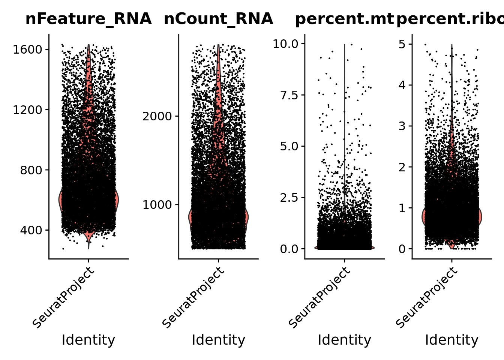

Example for the Grubman et al. 2019 dataset (PMID:31768052)
The following script was applied to the Grubman dataset, which consists of single-nucleus (sn)RNA-seq in postmortem entorhinal cortex from six healthy controls and six patients with Alzheimer’s Disease (AD).
The data was accessed as a preprocessed count matrix and a covariare matrix, both available at GEO (GSE138852).
Remove nuclei with the following features: - Feature counts lower than 200 and higher than 5000; - UMI counts lower than 500 and higher than 20000; - Percentage of mitochondrial genes higher than 20%: - Percentage of ribosomal genes higher than 5% (only applied to snRNA-seq data).
An object of class Seurat
10850 features across 11440 samples within 1 assay
Active assay: RNA (10850 features, 0 variable features)
1 layer present: counts
# check mean genes per nucleimean(Seurat@meta.data$nFeature_RNA)
[1] 756.6617
The used filtering pipeline originated a Seurat object with 11,440 nuclei, 10,850 genes and approximately 757 genes per nuclei.
Quality Control metrics
Visualize the number of genes and UMI counts per nuclei, and the percentage of mitochondrial and ribosomal genes as violin plots.
print(VlnPlot(Seurat, features =c("nFeature_RNA", "nCount_RNA","percent.mt","percent.ribo"), ncol =4))
Warning: Default search for "data" layer in "RNA" assay yielded no results;
utilizing "counts" layer instead.

FeatureScatter representation of the association between the number of UMI counts per nuclei and the percentage of mitochondrial genes, and between UMI counts and the number of genes per nuclei.
Remove the columns on percent.ribo and percent.mt from the metadata.
Seurat@meta.data <- Seurat@meta.data[,-c(4,5)]
Filter out genes associated with postmortem interval
Remove the list of genes associated with postmortem interval in bulk RNA-seq in cerebral cortex (Zhu et. al 2017; PMID: 28710439). This list (“PMI-genes.csv”) is available on the “Support data” folder from this repository.
Note: In the original Grubman et al. study these genes had already been removed. This script was applied to all other datasets.
An object of class Seurat
10850 features across 11440 samples within 1 assay
Active assay: RNA (10850 features, 0 variable features)
1 layer present: counts
# check mean genes per nucleimean(Seurat@meta.data$nFeature_RNA)
[1] 756.6617
Doublet removal
Doublets (n=858) had already been calculated using DoubletFinder (see script in “Double-Finder.html” in this repository). Upload a vector of nuclei (“doublets”) deemed as doublets. Plot the Seurat object highlighting the doublets.
An object of class Seurat
21700 features across 10582 samples within 2 assays
Active assay: SCT (10850 features, 3000 variable features)
3 layers present: counts, data, scale.data
1 other assay present: RNA
2 dimensional reductions calculated: pca, umap
mean(Seurat@meta.data$nFeature_RNA)
[1] 756.4457
(Re)Normalization, dimensionality reduction and clustering
After removal of the doublets, the SCT normalization is repeated and the clustering is done with FindNeighbors and FindClusters.
Seurat <-SCTransform(Seurat, verbose =FALSE) #default variable features = 3000
Modularity Optimizer version 1.3.0 by Ludo Waltman and Nees Jan van Eck
Number of nodes: 10582
Number of edges: 420910
Running Louvain algorithm...
Maximum modularity in 10 random starts: 0.9890
Number of communities: 8
Elapsed time: 1 seconds
Eight clusters were originated for a clustering resolution of 0.05.
Upload the list of canonical cell-type markers collected from the literature that is located at the “Support data” folder of this repository. Check for canonical markers within Seurat.markers.
Check the expression of some canonical markers to guide cluster annotation. Script for the stacked violin plot function:
## remove the x-axis text and tick## plot.margin to adjust the white space between each plot.## ... pass any arguments to VlnPlot in Seuratmodify_vlnplot<-function(obj,feature,pt.size =0,plot.margin =unit(c(-0.75, 0, -0.75, 0), "cm"),...) {p<-VlnPlot(obj, features = feature, pt.size = pt.size #,cols = UMAP_colors, ... ) +xlab("") +ylab(feature) +ggtitle("") +theme(legend.position ="none",axis.text.x =element_blank(),axis.ticks.x =element_blank(),axis.title.y =element_text(size =rel(1), angle =45),axis.text.y =element_text(size =rel(1)),plot.margin = plot.margin )return(p)}## extract the max value of the y axisextract_max<-function(p){ymax<-max(ggplot_build(p)$layout$panel_scales_y[[1]]$range$range)return(ceiling(ymax))}## main functionStackedVlnPlot<-function(obj, features,pt.size =0,plot.margin =unit(c(-0.75, 0, -0.75, 0), "cm"),...) {plot_list<- purrr::map(features, function(x) modify_vlnplot(obj = obj,feature = x, ...))# Add back x-axis title to bottom plot. patchwork is going to support this?plot_list[[length(plot_list)]]<- plot_list[[length(plot_list)]] +theme(axis.text.x=element_text(angle =45, hjust =1), axis.ticks.x =element_line())# change the y-axis tick to only max valueymaxs<- purrr::map_dbl(plot_list, extract_max)plot_list<- purrr::map2(plot_list, ymaxs, function(x,y) x +scale_y_continuous(breaks =c(y)) +expand_limits(y = y))p<- patchwork::wrap_plots(plotlist = plot_list, ncol =1)return(p)}
Subset the immune cell cluster from the Seurat object
The nuclei annotated as belonging to immune cells are singled-out in an individual Seurat object, consisting of 340 nuclei, to be later integrated with the other datasets to form the
Human Microglia Atlas (HuMicA).
The last step consist on verifying if any of the samples within the filtered object shows an unbalanced number of nuclei. In this case, all samples have an approximate number of nuclei. Therefore, all were included in the final integration.
md <- Immune_Seurat@meta.data %>% as.data.tableCell_number_subject <- md[, .N, by =c("Sample_ID")]Cell_number_subject